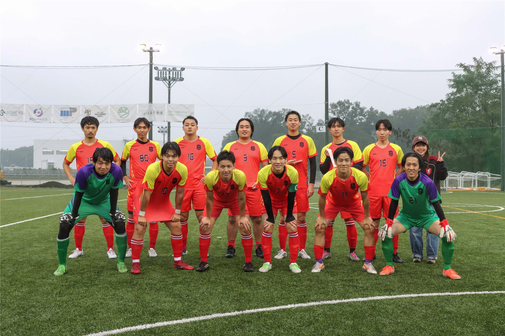

- 日時
- 2026.10.24（土） 15:40 KO
- 会場
- スリースターフィールド鶴ヶ島
- 前半 / 後半
- 1-0 / 0-0
- 得点
- 髙橋 飛翔（19分）

FULL MATCH ・ VEO試合動画を見るVeo のページが別のタブで開きます
FULL MATCH ・ VEO試合動画を見るVeo のページが別のタブで開きますJoin us
全ポジションの選手とマネージャーを募集しています。練習参加は何回でもOKです。
Official Partners